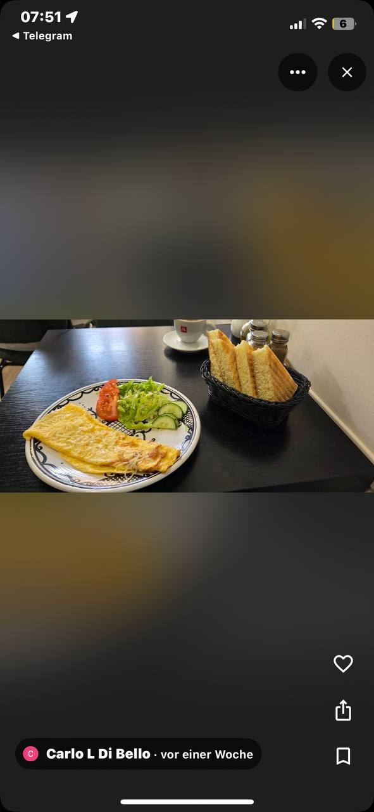

Marokkanische Snacks, frischer Mint-Tee und orientalische Spezialitäten — kleine Gerichte, große marokkanische Gastfreundschaft mitten in Amsterdam.
Bei Mouss treffen orientalische Tradition und Streetfood-Kultur aufeinander
Mouss wurde mit einer einzigen Vision gegründet: die warme, herzliche Gastfreundschaft Marokkos nach Amsterdam zu bringen. Jedes Gericht erzählt eine Geschichte — von traditionellen Familienrezepten, frischen Zutaten und der Liebe zur marokkanischen Küche.
Von knusprigen Briouats über duftenden Couscous bis zum perfekt zubereiteten Mint-Tee — bei uns schmeckt man die Leidenschaft.
⟶ Alle Gerichte werden täglich frisch zubereitet. Zum Mitnehmen oder Vor Ort genießen — ganz wie du magst.

Komm vorbei für einen Mint-Tee oder einen Snack 🇲🇦
Bleib auf dem Laufenden über neue Gerichte, Aktionen und mehr 🇲🇦